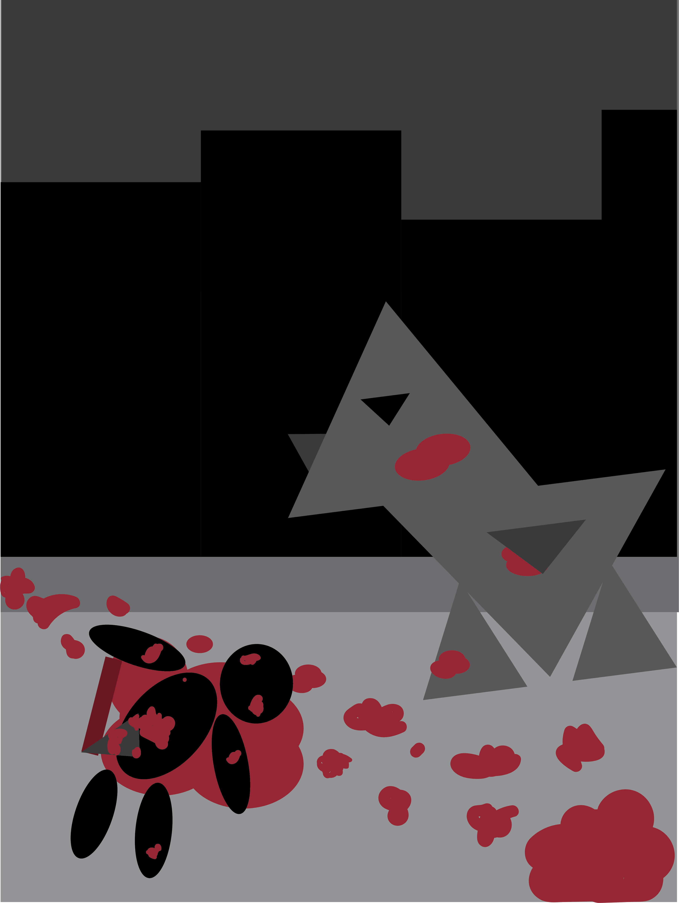
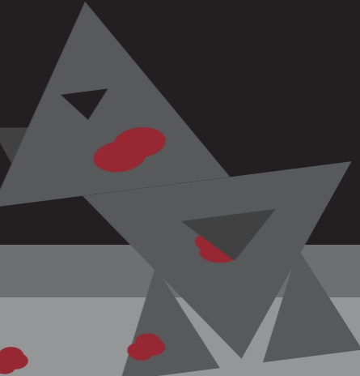
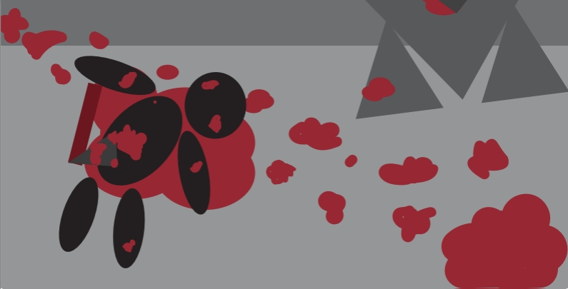
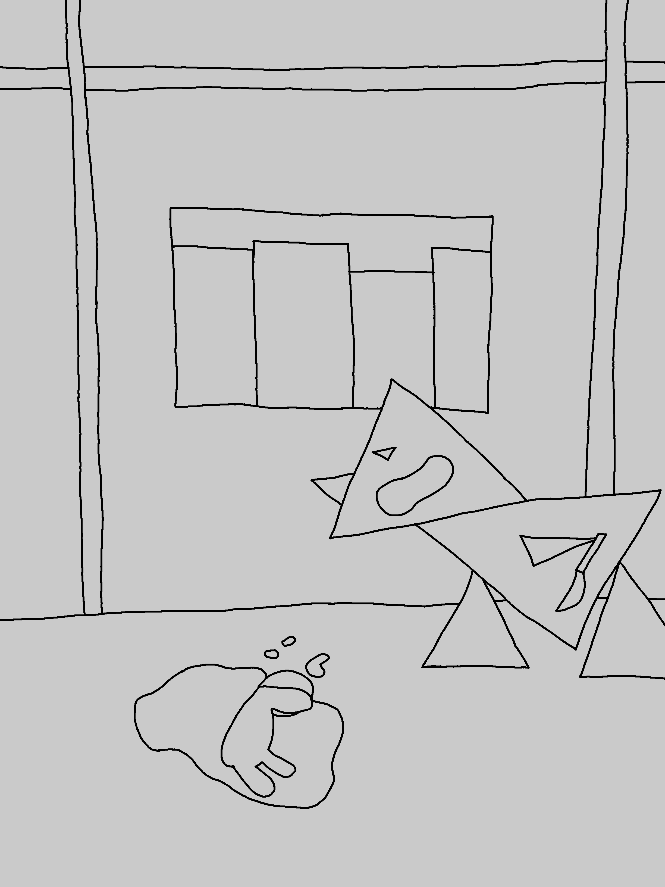
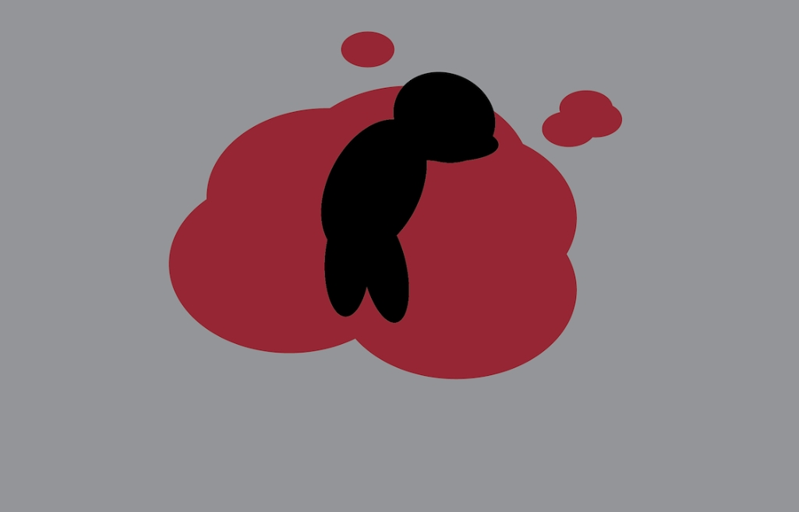
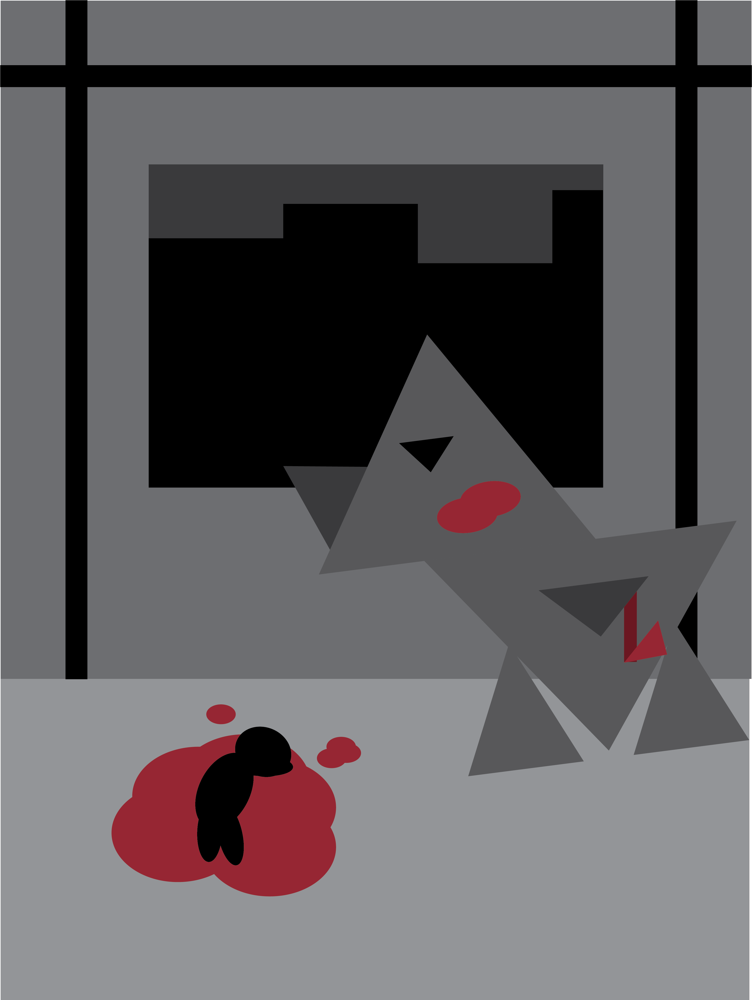

The goal of this assignment was to only use shapes to depict a secene where a bird was the killer while the human was the victim. For the bird I decided on creating it with triangles because sharpness usually signifies fear. In my original image, the bird was holding the axe, but after further revisions I added the axe on top of the human to show the murder already happened. To make the scene more gruesome, I added blood splatters all over the ground and made the human look like they're lying on the floor, covered in blood. for the scene I changed it from it being a room, to the scene being outside; thus, giving it more of an eerie feeling.
Date created: 2026
Apps used: Illustrator





